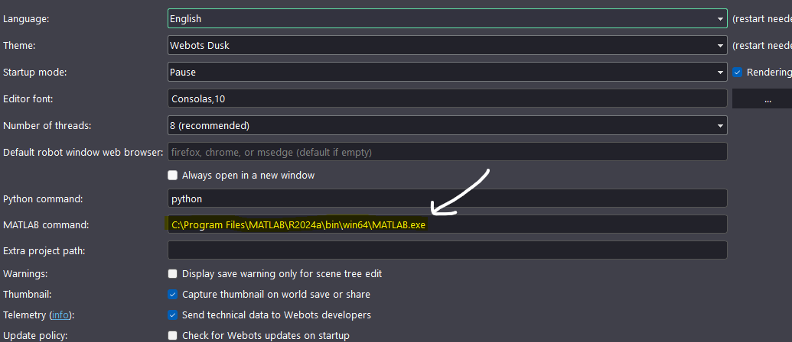

Setup Guide¶
This guide provides step-by-step instructions to configure the Webots-Simulink Bridge on your system.
1. Install Webots¶
Download and install Webots from the official website:
- Visit https://cyberbotics.com/ and download Webots R2023a or later
- Run the installer and follow the on-screen instructions
- Verify the installation by launching Webots and opening a sample world
Platform-Specific Installation¶
2. Install MATLAB and Simulink¶
- Download MATLAB from MathWorks
- During installation, select the following products:
- MATLAB
- Simulink
- MATLAB Coder
- Control System Toolbox (recommended)
- Complete the installation and activate your license
Verify Toolbox Installation¶
Run the following command in MATLAB to confirm installed toolboxes:
3. Configure MATLAB Path¶
Add the Webots MATLAB controller library to your MATLAB path:

Manual Path Configuration¶
Verify Path Configuration¶
If the path is correct, MATLAB displays the full path to the function file.
4. Configure Environment Variables¶
Set the WEBOTS_HOME environment variable to point to your Webots installation:
5. Configure C Compiler¶
MATLAB requires a C compiler for MEX file generation. Configure the compiler:
Install MinGW-w64 (Windows)¶
If no compiler is found on Windows:
- Open MATLAB
- Go to Home → Add-Ons → Get Add-Ons
- Search for "MinGW-w64"
- Install "MATLAB Support for MinGW-w64 C/C++ Compiler"
- Restart MATLAB
6. Clone the Project Repository¶
Clone the Webots-Simulink Bridge repository:
Add the project to MATLAB path:
7. Verify Installation¶
Run the following commands to verify your setup:
% Check MATLAB version
version
% Check Simulink
ver Simulink
% Check if Webots library is accessible
exist('wb_robot_init', 'file')
% Check compiler
mex -setup
Expected output:
- MATLAB version should be R2020b or later
- Simulink should be installed
- wb_robot_init should return 2 (function exists)
- A C compiler should be configured
Troubleshooting¶
| Issue | Solution |
|---|---|
wb_robot_init not found |
Verify Webots path is added correctly |
| Compiler not found | Install MinGW-w64 via MATLAB Add-Ons |
| Library load error | Check WEBOTS_HOME environment variable |
| Permission denied (Linux) | Run sudo ldconfig after setting library path |
Next Steps¶
After completing the setup, proceed to the Connecting Guide to learn how to establish communication between Webots and Simulink.